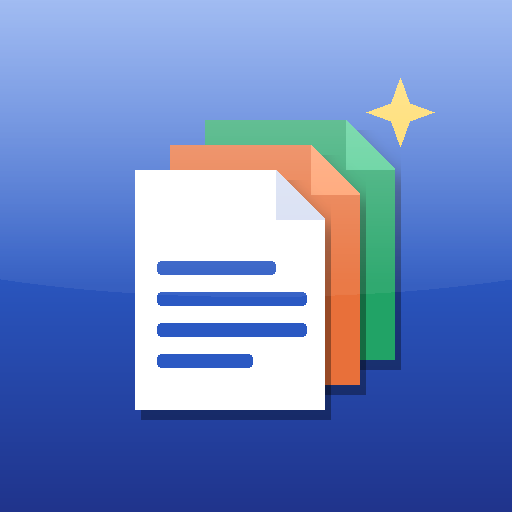

SmartDocument 개인정보처리방침
SmartDocument (스마트도큐먼트) — Privacy Policy · 시행일 / Effective: 2026-11-10
한국어
「SmartDocument」(이하 '앱', 개발: C&Klab / menewsoft)은 폰에 저장된 문서(워드·엑셀·파워포인트·한글·PDF 등)를 찾아 보고, 고치고, 보내는 문서 관리 앱입니다. 이 방침은 앱이 어떤 정보를 어떻게 다루는지 설명합니다.
- 회원가입·로그인 — 없습니다. 이름·이메일·전화번호를 받지 않습니다.
- 문서와 파일 — 이용자의 문서는 기기 안에서만 읽고 고치고 저장합니다. 앱 개발자의 서버로 문서나 그 내용을 보내지 않습니다. 본문 검색을 위한 색인과 '이전 버전' 사본, 즐겨찾기·최근 문서·공유 기록은 기기 안 앱 전용 저장 공간에만 저장되며, 앱을 삭제하면 함께 지워집니다.
- 저장소 권한 — '모든 파일 접근' 권한은 이용자가 '전체 문서 찾기'를 켤 때만 요청하며, 폰 안의 문서 파일을 찾아 목록으로 보여 주고 이용자가 고른 문서를 열고 저장하는 데에만 씁니다. 사진·음악·연락처 등 문서가 아닌 정보는 읽지 않습니다. 이용자가 고른 폴더만 쓰는 방식(폴더 고르기)도 제공합니다.
- 공유 — 이용자가 '공유'를 누르면 이용자가 고른 앱(예: 카카오톡·메일·클라우드)으로 그 문서를 넘깁니다. 이후의 처리는 그 앱의 방침을 따릅니다.
- 광고 — 앱은 무료이며 화면 위나 아래에 배너 광고가 표시될 수 있습니다. 광고는 Google AdMob(Google LLC)이 제공하며, 광고 표시·측정·부정 방지를 위해 기기의 광고 ID, 기기·앱 정보, 대략적인 위치(IP 기반), 광고 상호작용 정보가 Google에 전송될 수 있습니다. 문서 내용은 광고에 쓰이지 않습니다. 기기 설정에서 광고 ID를 재설정하거나 맞춤 광고를 끌 수 있습니다. 동의가 필요한 지역에서는 앱이 먼저 동의를 묻습니다. 자세한 내용: Google 광고 정책
- 인터넷 사용 — 광고 표시와, 이용자가 고른 클라우드 공유 기능에만 씁니다.
- 아동 — 앱은 만 13세 미만 아동을 대상으로 하지 않습니다.
- 삭제 — 앱을 삭제하면 기기 안의 앱 데이터(색인·이전 버전·설정)가 모두 지워집니다. 개발자는 이용자 개인정보를 보관하지 않으므로 별도로 지울 정보가 없습니다.
- 문의 — minyouman@gmail.com
English
SmartDocument ("the app", by C&Klab / menewsoft) is a document manager that finds, views, edits and shares documents stored on your phone.
- No account — no sign-up or login; we do not collect your name, email or phone number.
- Your documents stay on your device — documents are read, edited and saved on the device only. Nothing is uploaded to our servers. The search index, previous-version copies, favorites, recents and share history are kept in the app's private storage and removed when you uninstall.
- Storage permission — "All files access" is requested only when you turn on "Find all documents" and is used solely to list document files and open/save the ones you choose. Non-document data (photos, music, contacts) is not read. A folder-picker mode is also available.
- Sharing — when you tap Share, the document is handed to the app you choose; that app's policy applies afterwards.
- Ads — the app is free and may show banner ads provided by Google AdMob. For ad delivery, measurement and fraud prevention, Google may receive the advertising ID, device and app information, approximate location (from IP) and ad interaction data. Document contents are never used for ads. You can reset your advertising ID or opt out of personalized ads in device settings; where required, the app asks for consent first. See Google's ad policies.
- Children — the app is not directed to children under 13.
- Deletion — uninstalling removes all app data on the device. We keep no personal data about you.
- Contact — minyouman@gmail.com